01De Mamá Mecho
Una receta familiar, escrita a mano.
Nuestra bisabuela Nemesia García, “Mamá Mecho”, originaria de Tlaxcala, guardaba en su recetario una receta de sopa de tortilla. Generaciones después, se convirtió en Chololoy®.
Base para Sopa de Tortilla Chololoy® · Desde 1990
Una cucharada de Chololoy® en una taza de agua caliente da un caldo rico y casero. 100% natural, sin conservadores: la receta familiar que los restaurantes mexicanos sirven desde 1990.
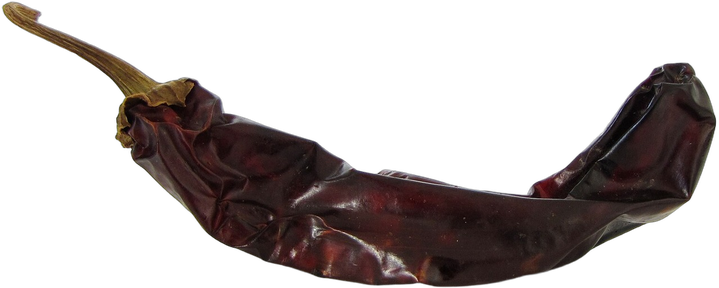
Chile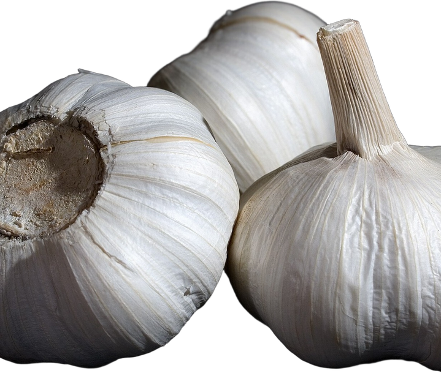
Ajo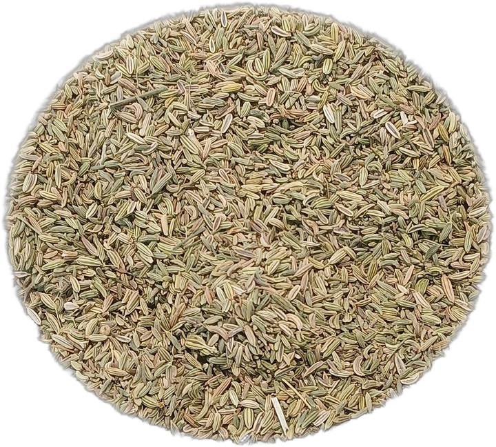
Comino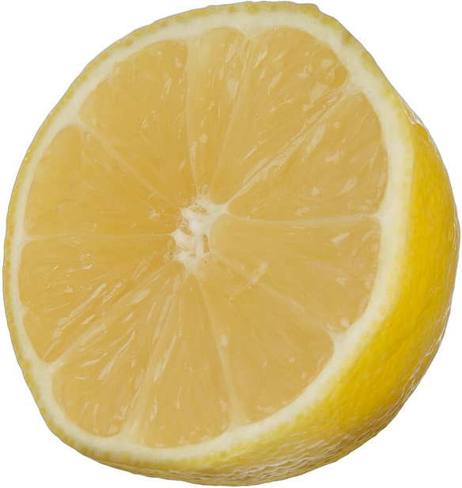
Cítrico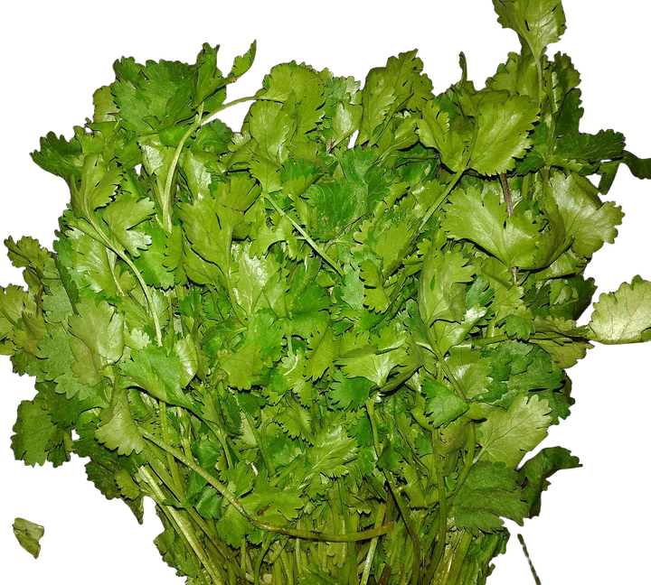
Hierbas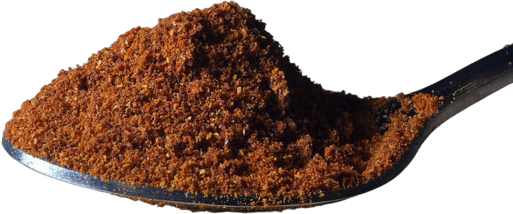
1 cda.Cajas de 12 × 1 lb · Pedido mínimo de 5 cajas · Atendemos en español
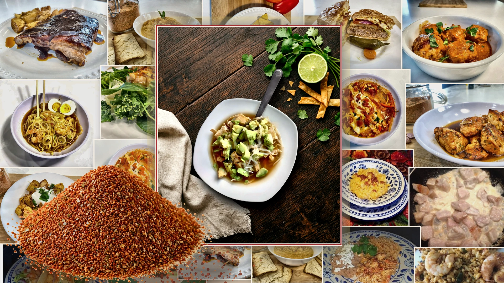
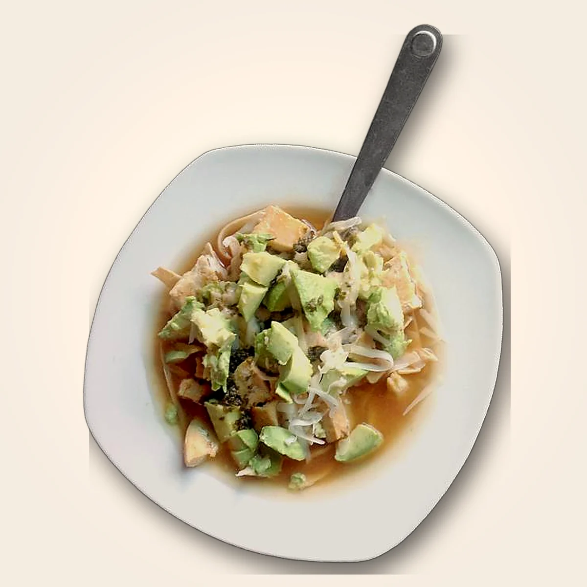
01 — Producto estrella
Chololoy® nació de un solo platillo: la sopa de tortilla del recetario de la bisabuela de Víctor. Sigue siendo lo que los restaurantes le piden a la familia: un caldo constante, con sabor casero, que cualquier cocinero puede preparar en cualquier turno.
Rendimiento: 4 oz rinden 1 galón de caldo. Una libra rinde 4 galones. Agrega 4 lb de pollo para obtener 5 galones de sopa.
El año en que Víctor empezó a surtir cocinas de restaurantes en EE. UU.
por taza de agua caliente. Al hervir, el caldo está listo.
estados de EE. UU. con restaurantes que lo sirven.
Desliza para seguir la historia.

Videos cortos de recetas de la cocina familiar, en inglés o en español. Toca cualquier platillo para verlo con sonido.
Cada tarjeta indica exactamente cuánto Chololoy® usar.
Todas las recetasPasa el cursor o toca un platillo para ver exactamente cuánto Chololoy® lleva. Las cantidades vienen de las recetas probadas de la familia.
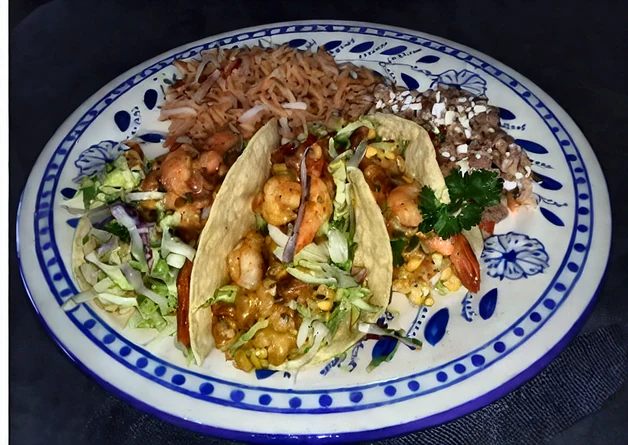
Mariscos Camarones michelada 2 cdas. Disuelto en cerveza tibia y vertido sobre los camarones. Carnes
Albóndigas en salsa de tomate
1 cda. Mezclado con la carne de las albóndigas.
Carnes
Albóndigas en salsa de tomate
1 cda. Mezclado con la carne de las albóndigas.
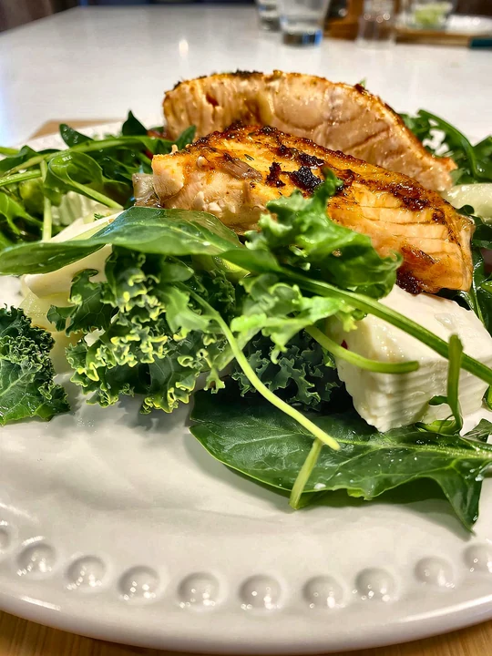
Mariscos Ensalada con salmón 1 cda. Mezclado con mantequilla y untado al pescado. Dips
Dip Chololoy®
1½ cdas. Solo se revuelve.
Dips
Dip Chololoy®
1½ cdas. Solo se revuelve.
 Sopas
Sopa de frijoles negros
1 cda. Licuado con los frijoles y el agua.
Sopas
Sopa de frijoles negros
1 cda. Licuado con los frijoles y el agua.
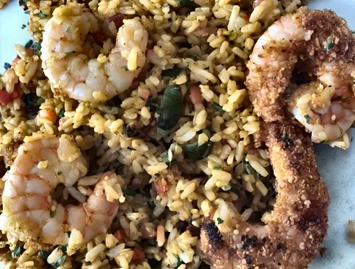
Arroz Arroz y camarones empanizados 2 cdas. En el arroz y también en los camarones.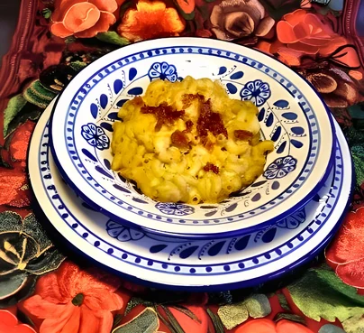
Pasta Macarrón con queso 2 cdas. Batido en la salsa de queso.“Cuando la gente lo prueba, vuelve a pedirlo.”La familia Hitchcock, Chololoy®
Una cucharada en una taza de agua caliente. Cuando hierve, el caldo está listo y sabe igual en cada turno.
Unas 52 cucharadas por libra, así que usas solo lo que necesitas.
La receta de la bisabuela de Víctor. Ingredientes 100% naturales y sin conservadores.

Nemesia García, “Mamá Mecho”, bisabuela de Víctor y originaria de Tlaxcala, escribió una receta de sopa de tortilla. Su bisnieto Víctor Hitchcock Medina la convirtió en un sazonador deshidratado que cualquier restaurante podía preparar en minutos y, en 1990, empezó a enseñarles a las cocinas de los restaurantes mexicanos a usarlo. Creó un mercado donde no existía.
Hoy sus hermanos, Patrick y Kristina, continúan su legado.

Mira a Víctor preparar la sopa de tortilla con la que empezó Chololoy®, la misma receta familiar que Patrick y Kristina siguen haciendo hoy.
Se vende por caja, directo del productor. Mezclas especiales disponibles para clientes grandes.
Muestras para restaurantes, distribuidores y tiendas. Cuéntale a Kristina un poco de tu cocina.
Recetas de la cocina familiar y noticias de Chololoy®. Sin spam.
Puedes cancelar cuando quieras.
Al suscribirte, aceptas nuestra Política de privacidad.
Cada caja contiene doce bolsas de aluminio de 1 lb, selladas al calor, de Sazonador Original Chololoy®. El pedido mínimo es de 5 cajas.
Los pedidos de mayoreo tardan de 4 a 6 semanas en entregarse.
Para clientes grandes, sí: desde pequeños ajustes, como el tamaño de los trozos de cebolla, hasta una mezcla exclusiva basada en la original. Kristina verá los detalles contigo directamente.
Dura un año. Es 100% natural y sin conservadores.
Hay presentaciones más pequeñas para el hogar, bajo pedido. También se vende en bote para venta al menudeo, para tiendas. Contacta a Kristina. Para cantidades de restaurante, pide una caja de mayoreo.
Muestras, pedidos o una mezcla especial: Kristina responde cada mensaje personalmente. Atendemos en español.
kristina@chololoy.net(503) 703-7720